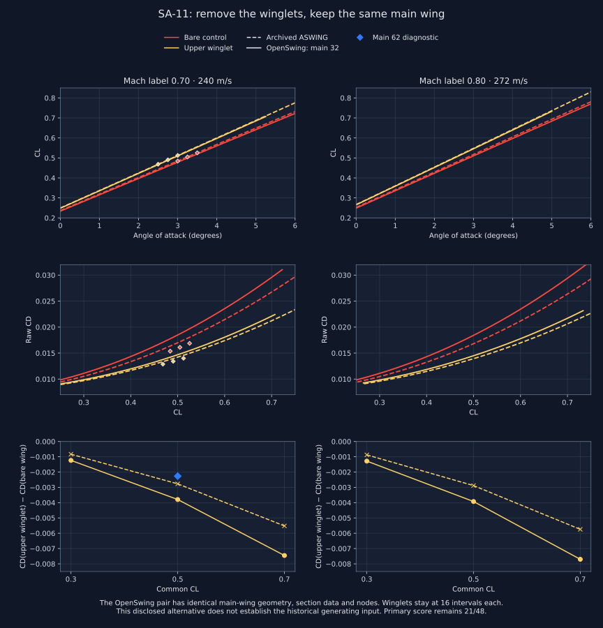

Follow-up: localized wingtip wake interactions and a tip-only mesh control.
The control removes only the Joint and two winglet Beam blocks from the disclosed report-derived upper-winglet model. Main-wing geometry, section data, nodes, references and operating settings are identical between the pair. The original archive input is preserved.
All 56 new diagnostic solves are valid. The 32-interval bare control passes all six selected lift checks and fails all six equal-lift drag checks. These alternative results are separate from the unchanged 21/48 primary score.
| Quantity | ASWING | Main 32 | Main 62 |
|---|---|---|---|
| Total ΔCD | -0.00276893 | -0.00379425 | -0.00226453 |
| Trefftz ΔCDi | -0.00263341 | -0.00285607 | -0.00263642 |
Changing only the main-wing mesh moves the total-drag benefit from 37.0% too strong to 18.2% too weak. Both winglets retain exactly the same 16-interval geometry and sampling points. The finer main-wing trial matches the Trefftz induced-drag reduction within 0.12% and the lift increment at 3° within 2.97%.
This identifies sensitivity in near-field drag evaluation; it is not a convergence claim or a new acceptance requirement. No solver equation, default, tolerance or primary scope was changed.

Download plot · Control and force decomposition · Mesh comparison · Independent verification
Inspect the disclosed control: ASW file and matching mesh. This is a diagnostic model, not the archived bare-wing file.
Observed 2026-11-08T20:37:19.486161+00:00. Small serial foreground jobs; no browser, Vite, build or background solver was started.